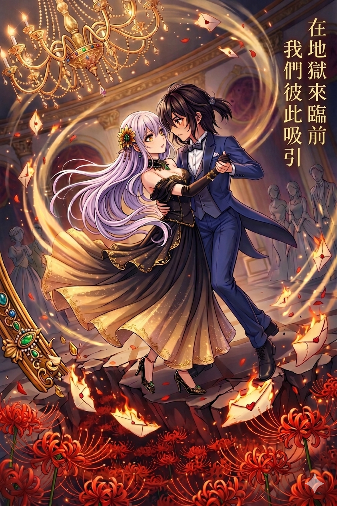

水晶吊燈高懸於大廳，燭光在金色雕花天花板間折射出千百個光斑，猶如繁星墜落凡間。舞池中，少年少女的禮服在光影下閃耀，珍珠、絲絨、緞帶交錯，音樂如流水般傾瀉。樂師們正全神貫注拉奏著小提琴，連每一次弓弦觸碰弦線的聲音都被精心放大，像是為了襯托這座莊園的富麗堂皇。
大小姐慵懶地靠坐在高背長椅上，銀灰色的髮絲在燭光下泛著冷冽光澤。髮髻高高束起，卻特意留了幾縷鬆散的髮絲垂落，襯得她眉眼間的淡漠神情更添一份隨性。金絲髮釵靜靜插在髮間，藍寶石墜子隨著她微微轉頭，映出一點點藍光。耳邊的長垂銀飾隨姿勢輕晃，如同月色落入水波。
一襲拼接的異國華服覆在她身上：上身的金線織布繡著細密幾何紋樣，光影間宛若金河流動；腰間的黑色絲緞緊貼身形，勾勒出矜貴卻慵懶的姿態；層層疊起的薄紗裙襬流轉著淡紫、深藍與黑金的漸層，微微散落在椅腳邊，像夜空靜靜墜落。冰藍色的披肩隨意搭在肩頭，將她的冷意襯得更為明顯。
她的手輕搭在椅扶手上，指尖閃著紅寶石與翠玉的光澤，每一枚戒指都顯示著不同國度的印記。黑緞摺扇靜靜握在掌心，金線勾勒的孔雀昂首張翅，光彩低調卻凌厲。
裙襬微微散開，露出一抹漆黑光澤。那雙異國風格的高跟鞋，鞋身以黑色漆皮製成，宛如鏡面般反射著燭光。鞋尖鑲著一顆拋光過的小紅寶石，低調卻致命，像是暗夜裡隱隱閃爍的星火。鞋口繡著細緻的金絲花紋，細微之處也顯示出匠人的用心與奢華。
大小姐的手指輕扣著銀製酒杯，面容平淡如水。每一次父親安排的「合適青年」走進視線，她的眼神都只是輕掃，像隔著一層無形的玻璃，看著這些精心打扮的公子們卻全無興趣。
「能否榮幸與您共舞一曲？」
有位少爺踏前，行了整齊的鞠躬，伸出手邀舞。大小姐輕輕抬眉，目光淡然地掃過他，然後轉過臉去，仿佛那少年根本不存在。少爺僵在原地，微微張嘴，又不得不退回人群中。
又一位自誇家世顯赫、佩戴金絲徽章的青年上前，嘴角帶著自信的笑，手指優雅地伸向她：「大小姐，可否賜我一支舞？」
大小姐微微側身，像是打從心底懶得費力，眼神只淡淡地落在那位少爺的臉上。她的動作不急不徐，彷彿她只是伸手把一個細小的灰塵拂開。唇角帶著禮貌性的笑，卻輕飄得像落不下分量。
「抱歉……我今晚並不打算多跳舞。」
語氣柔和，沒有半點尖銳，卻輕易地封死了對方的可能。那少爺只能帶著遺憾後退，仍不敢露出不耐。
大小姐的父親看在眼裡，眉宇間浮上一抹無奈。身旁的貴族輕聲打趣：「令嬡果然眼光高啊，總是挑不上心儀的對象。」
父親苦笑一聲，目光仍落在女兒身上：
「挑？倒也不是……只是她總是不動心。」
下一個少爺又上前，這次帶著極大的自信，談及自己家族與上層貴族的潛在合作。
大小姐慢慢地將酒杯放回桌上，目光從上方掃過他一圈，臉上毫無情緒。不是輕蔑，不是嘲弄，只是那種——你不值得我的時間，也不在我的興趣清單裡。青年一怔，手微微僵住，隨後不再多言，自覺地退下。
眾人都低聲竊語，但大小姐沒有理會，身形優雅如雕像般，轉過身去。
父親忍不住輕聲靠近女兒，語氣裡多了一點寵溺的歎息：
「我的寶貝，總要給自己一點機會吧？這些孩子可是我費了心思才邀來的。」
大小姐側過頭，眼神像落在虛空，語氣依舊淡淡：
「我知道，爸爸。但……他們都沒有趣味。」
父親一愣，隨即無奈地笑了笑，搖頭嘆息。
她的目光再一次掃過舞池，那些衣著華麗的公子們，行禮、談笑、旋轉……全都像透明的雕像，毫無魅力，也毫無吸引力。她的心，依然平靜如湖。這就是她的世界——奢華至極，卻乏味到令人麻木。
然而，正當她轉向無趣的舞池邊緣時，一個不屬於這個世界的人影映入眼簾。
他衣著得體卻不拘泥，燕尾服略顯皺褶，襯衫隨意翻開，神情自然而自信，步伐輕盈。更奇特的是，那雙眼睛，彷彿暗藏光芒，與大小姐的視線交會的瞬間，她感到一股久違的悸動——不是被禮服吸引，也不是被名聲吸引，而是單純地……有趣。
她微微抬眉，第一次在舞會中，為一個陌生人而動心。
她直直地望向他，眼底迸出的光芒像被悄悄點燃的火花。那是她第一次在舞池中對一個陌生人感到真正的興趣，第一次覺得自己想親自伸手抓住什麼。
喀──喀──喀──
人群逐一停下腳步，帶著訝異轉頭。
只見大小姐站起身、緩緩提步，每一步都像是刻意放慢，沉穩卻充滿張力。
長裙隨步伐輕輕搖晃，裙擺碰觸地毯發出柔軟的刷響；高跟鞋的聲音在大理石地板上迴盪，清脆得蓋過樂曲中的小提琴。
那聲響並不急促，卻像是細針一樣，一下下刺進眾人的耳膜。舞池邊原本交談的貴族們不自覺停下話語，目光順著聲音望去。
高跟鞋落在大理石地板上的節奏，冷冽而不容忽視。她的手指如雕琢般優雅，邁步向那人走去，腳步穩健而決然，每一步都精準無比，像是在擊打全場的心臟。
她沒有看任何人，目光只專注在一處。
──那個不該出現在此處的『他』。
「你——」她在距離他不遠時開口，聲音清冷而果斷，「願意給我這支舞嗎？」
周圍瞬間安靜下來。少年微愣，環視四周，心裡慌亂：這……這位千金小姐居然主動邀他跳舞？舞會上所有人都目光聚焦過來，耳語驟起，臉上寫滿錯愕與猜測。
少年心底想，自己只是從某個倒楣少爺手裡偷到這張邀請函，原本以為這裡只是個可以填飽肚子的地方，根本沒料到自己會被注意。可是眼前這位大小姐卻鎮定、從容，帶著一種奇怪的自信以及威嚴感。
——禮貌與本能驅使下，他伸手，與大小姐的手緊緊交握。
音樂響起，他們旋轉於金色地毯與水晶吊燈光影之間，像被世界隔開的兩個靈魂。大小姐的眼底第一次有了光，不是柔情，而是被「有趣」的存在吸引，她的手溫度從手掌傳到心底，悸動而不可言說。
她沒有想到，也無法言喻，為何自己會對這個陌生人如此專注。這是她第一次在整個貴族世界之外，看見自己想要追隨的存在。
少年感受著這份奇異的注視，心中微微懼怕卻又有種說不清的好奇。這不是貴族的遊戲，而是第一次有人如此……真切地看著他。
大小姐與他旋轉著，裙擺與燕尾服的布料在燭光中飛揚，水晶的光斑映在他們身上，像是為他們鋪設的舞台。世界豪華而空洞，唯有他們兩人，第一次真正活在彼此眼中。
舞步繞過金色地毯、珍珠吊飾，閃過眾多不在乎的少年少女。每一次旋轉，她的心中都有一種前所未有的悸動，彷彿整個世界忽然被重新點亮，而那一點光芒，全來自於這個陌生而瀟灑的人。
(舞會後，中庭花園，月下等你。)
那是在舞蹈即將結束時，大小姐彷彿謎語般的輕聲邀約。她的語氣輕柔卻不容置疑，像是一句命令，又像是一場挑釁。
舞曲在最後一聲琴弦顫動裡收束，緊接著是此起彼落的掌聲與讚歎。水晶吊燈散落下的光暈映照著舞池中央，那一對出乎所有人意料的舞伴。
大小姐於掌聲間輕輕鬆開手，腳步後退半步，裙裾隨動作輕擺。她微微彎腰，禮數周全，卻沒有再多留一瞬。轉身的背影冷冽而決絕，像是早已不在意任何人的眼光。
廳堂裡響起一陣壓低的竊竊私語，模糊不清卻帶著一絲騷動。有人注視著，暗自推測、猜疑，甚至驚訝不已。但她不曾回頭，彷彿這些聲音與她毫不相干。
少年仍怔怔站在原地，直到周圍的視線讓他心底泛起不安。他悄然縮身，借著人潮散動的縫隙，順勢掠過侍者托盤，掩入邊角的陰影。低語聲隨他漸行漸遠而模糊，像潮水般退去。
。
舞會結束，賓客逐漸散去，廳堂只剩杯盞與殘響。少年這時才從另一條寂靜的走廊現身，腳步無聲地穿過石砌長廊，推門走向庭園。
少年依照約定來到中庭。夜色靜謐，花園的石徑在月光下泛著淡淡的銀光。草木因夜露而帶著清新的氣息，隱約傳來花香與蟲鳴聲，與方才舞會的喧囂形成了鮮明對比。
不久，輕緩的腳步聲自長廊方向響起。她如約而至，裙襬在月光下拖曳出柔和的弧線，眼神帶著一絲狡黠與期待。
「你來了。」她的聲音輕柔，像夜風一樣輕撫。
「……那真的是邀請我？」少年忍不住開口，語氣中帶著幾分戒備與不解。
「是啊。」她笑了，清脆的聲音隨夜風散開，「在這裡，不必在乎身份，不必計算得失。只需要放寬心來感受就好。」
少年一時間無言，彷彿這樣的時光根本不該屬於他。他本就只是從倒楣鬼那裡偷得邀請函，來這裡填飽肚子，卻意外被捲入這場與大小姐的謎樣舞蹈。
甚至，連『少年』的身份也都不屬於自己。
她微微偏頭，唇角浮起一抹淡淡的笑意，聲音低而清：「稍微陪我走走吧。」
這聲邀請輕柔，卻像將外界一切聲音都隔絕開來。彷彿這片花園、這一夜的月色，從此只為他們而存在。
他沉默片刻，伸手壓下內心翻湧的情緒，選擇走在她身旁。腳步在石磚上留下細碎的聲響，伴隨著夜風、花香與彼此的沉默，構成一段只屬於他們的序曲。
兩人先並肩漫步於花園深處。少年雖是第一次置身這樣精緻的庭園，卻沒有過多打量，而是默默記下與她相處的片刻。大小姐則似乎刻意放慢步調，不急著揭開邀約的真正目的，反倒像在珍惜這段偷來的時光。
曲折的石徑盡頭，是一處小巧的圓形石桌，周圍環繞著常春藤與玫瑰藤。月光灑落桌面，彷彿天然的燭光。桌上早已備好一壺茶與兩個小巧瓷杯。
她輕輕落座，做出一個請坐的手勢。少年猶豫片刻，才在她對面坐下。大小姐親手揭開壺蓋，淡雅的香氣隨著熱氣緩緩升起。
「這是我親自挑的花草茶。」她語氣帶著些許驕傲，像是要與他分享心底的秘密。
「裡面有玫瑰花瓣，用來舒緩心情；薰衣草，能安神助眠；再添一點檸檬馬鞭草，讓味道更清新。」她邊說邊輕輕晃動茶壺，熱汽在月光下繚繞。
少年凝視著她專注的神情，突然覺得這場幽會，比他任何一次偷盜都更需要謹慎。
她為他斟上一杯，眼神卻帶著一絲調皮：「嚐嚐吧，不過要小心，這茶不只會溫暖身子……也許還會偷走你的心。」
「為什麼……選我？」少年終於忍不住開口。語氣不似質疑，更像壓抑許久的困惑。
大小姐沒有立刻回答，她只是低頭，輕輕旋動著茶盞，看著茶面上漂浮的花瓣慢慢轉圈。然後，她抬起眼睛，那雙眼像月色般清亮，卻帶著難以忽視的力量。
「應該這麼說，我似乎……能感受到靈魂。」她說得很輕，卻足以讓人心臟一顫。
「不只是面容或舉止，而是每個人最深處的氣息。自小身邊人來來去去，各色人物的靈魂我都看過。有人空洞得像回聲，有人滿是銹色的貪婪，也有人用華麗的外衣掩飾早已腐爛的內裡……」
她頓了頓，語氣不帶厭惡，只是冷靜而疏離，彷彿陳述一個無趣的事實。
「久而久之，我便習慣了冷眼旁觀。因為在他們的靈魂裡，沒有任何東西值得我伸手。」
少年屏住呼吸，想要移開視線，卻被那雙眼牢牢鎖住。
「可是妳不一樣。」大小姐忽然彎起唇角，聲音變得溫柔，「妳的靈魂……在喧鬧的舞池裡，亮得刺眼。自由、狂野、還有一點不服輸的驕傲。那是我從未見過的光彩。」
她指尖輕敲茶盞，像是下了一個結論般說道：
「所以，就算妳再怎麼隱藏，我也只需要一眼，就知道——我想要的是妳。」
少年一瞬間呼吸滯住。
大小姐並沒有立刻移開視線，而是直勾勾地注視著她。那眼神清亮得近乎透徹，帶著無可抗拒的堅定，像要將她整個人看進去。
他下意識偏過頭，卻感覺到耳尖在月光下微微發燙，連心跳聲都變得異常清晰。指尖在衣襟邊緣游移，像是想找個支點來掩飾慌亂，但怎麼也掩不住內心被撩動的悸動。
心口「咚」地一聲，節奏失了拍。
他慌忙抬手去撫過額際的碎髮，企圖掩飾自己的不知所措，卻發現指尖微微顫抖。那一刻，她甚至分不清，是緊張，還是被某種無可抵擋的吸引力牽住。
大小姐只是靜靜笑著，沒有再逼問，也沒有多言，反而讓這份沉默更顯曖昧。
夜色靜謐。微風送來玫瑰的淡香，月光將白石鋪就的小徑染上一層銀霜，遠處的噴泉輕聲淌水，彷彿在為兩人的片刻獨處伴奏。時間仿佛在這一瞬間停駐，只剩下彼此呼吸與心跳交錯。
然而，她們都沒有察覺到——在花園陰影的另一側，一道高挑的身影靜靜站立。夜風掠過，將樹葉吹得沙沙作響，那人眉宇間的陰影更顯深沉。他的目光沉穩，冷靜卻不容忽視，如同某種未明言的審視，牢牢落在兩人身上。
夜色靜謐，庭園裡的燈火早已熄去，只剩一輪皎潔的月掛在空中。石徑兩旁的薔薇還帶著夜露，淡淡的花香隨著風飄散。涼亭裡，擺著一張小巧的圓桌與兩張木椅，桌上點著一盞銀製小燈，燭火在玻璃罩內微微跳動，將兩人的身影投映在石柱上。
盜賊靠坐著，姿態看似隨意，卻有著刻意壓低的語氣。
「妳真的不怕嗎？與一個……身份成謎的人來這種地方。」
大小姐輕輕把玩著手邊的茶盞，動作優雅，彷彿這不過是一場平常的夜談。她抬眼，月光映照下，瞳孔裡閃爍著明亮的光。
「謎嗎？」她語氣柔和，卻帶著篤定，「我感覺得到妳的靈魂……不屬於那些醜陋骯髒的存在。所以，即使妳隱藏得再好，我還是能一眼認出。」
盜賊愣了一瞬，隨即輕笑，眼底閃過一絲自嘲。
「那麼，妳可有想過……或許我的身份……並非表面如此亮麗？」
盜賊輕描淡寫地吐露了「我本就是個盜賊」時，語氣像是在陳述一個無關緊要的事實。
然而，這一個字眼背後，卻是她長年與陰影為伍的生涯。
她並非生來就屬於黑暗，而是因命運的捉弄，走上了這條路。自小便在城市的邊角長大，饑荒與冷眼是她最早的記憶。為了活下來，她學會了如何隱匿在街巷之中，如何用靈巧的手指竊取麵包，如何在追捕中靈活翻越牆垣。那些日子讓她練就了冷靜與果斷，也讓她明白「正直」在社會眼裡並不值錢。
可即便如此，她的靈魂卻沒有完全被黑暗侵蝕。她竊取的是財物，卻很少傷人；她習慣對貴族的華麗宴會心生不屑，卻又偶爾會夢想著，若自己能坐進那些明亮的廳堂，會是什麼模樣。
——這正是她矛盾的地方。
既是街頭的流亡者，又隱隱帶著不該屬於陰影的光。
因此，當大小姐不帶偏見地直視她時，那份篤定的溫柔，才會讓她心底最深處，那塊從未有人觸碰過的柔軟震顫不已。
「我早就知道了。」
她的語氣像風掠過水面，沒有一絲波瀾。
這樣的回答讓盜賊反而啞口無言。燈火搖曳，照亮大小姐不疾不徐的神情，彷彿她的接受，比任何責難都更沉重。
彷彿一切都在大小姐的預料之中，她緩緩站起身替盜賊添茶。琺瑯壺口傾斜，溫熱的花香在兩人之間瀰漫。
「既然這樣，『這部分』相信妳也有所察覺吧？」
盜賊微微傾身，月光落在她的側顏，顯露出幾分不曾注意的細緻。那一刻，大小姐忽然怔住，視線下意識凝在她纖長的指節與過於柔和的聲線上。
「等、等一下……」大小姐不自覺地輕退半步，裙襬在椅腳擦過，細微的摩擦聲在夜裡格外清晰。她指尖緊緊扣住茶盞邊緣，連呼吸都失了節奏。
「你……你竟然……？」
盜賊眼神微挑，乾脆大方挑明：「沒錯，我不是你以為的那個『他』。」
大小姐瞬間語塞，喉頭像被什麼堵住似的。那雙始終冷靜的眼眸，此刻浮上了徹底的驚訝，連手背都微微顫抖，像是月光也無法掩飾的慌亂。
片刻沉默，她終於垂下眼，深深吸了一口夜裡帶著薔薇清香的風。緩緩抬頭時，已恢復她一貫的姿態，手指放開茶盞，輕輕撫平裙襬。
「……真是出乎意料呢。」
她的聲音仍有些發顫，但嘴角卻勾起了一抹幾近自嘲的笑容。
「沒想到，竟是這樣的 『妳』。」
盜賊盯著她，卻只見那份失態一瞬即逝，取而代之的，是更加清明而堅定的目光。
她抬起頭，看著盜賊，眼神依舊清澈而堅定。
「我只是沒料到這一點。」她坦白地說，「但這不會改變什麼。」
那句話，沒有宣誓，卻比任何承諾都沉重。
燭火在兩人之間搖曳，把這場告白般的揭露，烙印進夜的靜謐。
幽會並沒有停止。
只是形式變得更加隱密，也更加自然，彷彿它們本來就該存在於大小姐的生活裡。不是每一次都伴隨月光，也不總是以私語作結。有時只是短暫地在城牆陰影下並肩走過一段路，誰也沒有說話，卻在腳步的節奏裡感受到彼此的存在。
大小姐開始熟悉那些不屬於她的時刻。
清晨尚未完全甦醒的街道，空氣裡帶著濕冷的石味；黃昏時分，市集散去後殘留的喧囂與氣味；夜裡風向轉換時，火把的影子如何在牆上拉長又收縮。她本該對這些毫無興趣，卻一點一點記住了。
因為那個人就在其中。
。。。
府邸裡的晚餐依舊準時開始。
長桌鋪著潔白的桌布，燭光映照在銀製餐具上，秩序一如既往。僕人們進退有序，將一道道菜餚安放在正確的位置上，彷彿這座宅邸本身就是一個不容錯位的機械。
大小姐端坐其間，舉止無可挑剔。
但父親注意到了她的遲疑。
她進食的節奏變慢，偶爾會在餐具即將觸碰盤面時停下，視線落在某個不存在於餐桌上的地方。那不是失禮，而是一種被牽引的分心。
父親沒有立刻指出。
他只是在心中確認，這不是第一次。
「最近，」他終於開口，語氣溫和得像是在關心天氣，「妳似乎有些心不在焉。」
大小姐抬頭，露出一個熟悉的笑容，完美得讓人無從挑剔。
「只是最近宴會多了些，有點疲憊而已。」
父親點頭，沒有追問。
但那一刻，他已經明白了。
他的女兒，正在把心思投向某個不該存在於她世界裡的人。
調查開始得極為安靜。
沒有質問，沒有對峙，只是例行的確認。出入紀錄、下人的目擊、城中近期的動靜，被一條條整理、比對。
結果卻令人不寒而慄。
那張臉，沒有任何一個貴族家族能對應。
那個名字，只存在於臨時捏造的文件裡。
反而在城裡的失竊事件報告紀錄裡，總是會看到相似的肖像畫。
當「盜賊」這個詞被寫進回報時，父親的手指停在紙上良久。
他以為這已經是最壞的結果。
直到最後一行。
「此人為女性，長期以男性身分行走。」
那一刻，書房裡的空氣徹底凝固。
憤怒不是立刻爆發的。
它先是沉澱，然後一層一層堆疊。
門不當，戶不對。
身分卑賤，出身骯髒。
更遑論，還是個女人。
在他的世界裡，這不只是錯誤，而是對秩序的褻瀆。
而他的女兒，竟然選擇了站在這樣的存在身旁。
這已經不是情感的問題。
而是必須被清除的異端。
大小姐是在某個夜晚，第一次等不到人。
她如約來到熟悉的地方，風聲輕柔，燈火尚亮。她以為只是遲了些，於是耐心地等待，直到街道逐漸空曠。
時間過去，她的心一點一點下沉。
那不是恐慌，而是一種冷靜而清楚的預感。
回到府邸時，父親已經在書房等她。
「妳最近，」他的聲音低沉而克制，「和一個不三不四的人走得太近了。」
她停下腳步，第一次沒有迴避那道視線。
「那只是你眼中的身分。」她說，「不是我所看見的靈魂。」
那句話，徹底點燃了怒火。
隔天，她的房門被鎖上了。
不是粗暴的囚禁，而是體面而冷靜的軟禁。門外的守衛沒有多說一句話，鎖扣落下的聲音卻異常清晰，像某種無法逆轉的宣判。
她仍被允許用餐、閱讀、休息。
窗戶能開，卻只到一個無法容納身體通過的角度。
一切看似沒有改變，卻沒有任何一條路能通往外界。
時間變得緩慢而精確。
白天被切割成一段段可計算的靜止，夜晚則被巡邏的腳步聲標記出規律的間隔。她坐在床邊，手指無意識地敲著木面，像是在丈量某種距離。
直到夜深。
門被輕輕敲了一下。
不是守衛的節奏。
她抬起頭。
門開了一條縫，一名女僕低著頭走進來，手裡端著晚間的茶點。動作一如往常，沒有任何多餘的眼神接觸。
「小姐，請用。」
聲音很輕。
她點頭，沒有多問。
女僕將托盤放下，轉身準備離開。
就在那一瞬間——
一張折得極小的紙，被悄悄壓在茶盞底下。
動作快得幾乎無法察覺。
女僕沒有停留，也沒有再看她一眼，只是低聲說了一句：「夜裡風大，請關好窗。」
然後離開。
門重新闔上。
鎖聲，再次落下。
房間恢復安靜。
她沒有立刻動。
只是看著那盞茶，指尖微微收緊。
過了幾秒，她才伸出手，將茶盞輕輕抬起。
那張紙，靜靜地躺在桌面上。
她將它攤開。
字跡很急，甚至有些歪斜，像是在極度緊張的情況下寫成的——
「今夜轉移，處理。地點：馬戲團。」
沒有署名。
也不需要。
她看懂了。
那一瞬間，她沒有立刻起身。
甚至沒有露出明顯的表情。
只是靜靜地坐著。
燭火輕輕晃動，影子在牆面上拉長又縮短。
「處理。」
這兩個字，在她腦中停留了一瞬。
然後被理解。
不是驅離。
不是警告。
不是讓她消失。
是——抹除。
她的呼吸，在那一刻輕輕亂了一下。
很細微，幾乎無法察覺。
她原本以為，這只是父親一貫的手段——
切斷、隔離、逼她回頭。
她甚至已經在思考如何應對，如何說服，如何在不完全撕裂的情況下，保住那個人。
……原來不是。
她低下頭，將紙條慢慢折回原樣。
指尖穩得異常。
像是在處理一件與自己無關的東西。
直到最後一折完成，她才輕輕閉了一下眼。
那一瞬間，有什麼東西，在她心裡安靜地斷裂。
不是爆裂。
而是非常乾淨、非常俐落的斷開。
她站起身走向窗邊。
月光冷靜而清晰，照亮她決絕的神情。床單被一條一條拆下，窗簾被解開、打結、試重。
她沒有猶豫。
因為她知道——
這一次，不是逃。
是去搶回一個正在被奪走的人。
。
盜賊那一天並不是沒有來。
夜色對她而言一向是最安全的掩護，她甚至能準確地說出每一處陰影會落在哪裡。
她熟練地翻過莊園外牆，踩著熟悉的路徑，避開巡邏的視線。
但那天，情況變得不一樣。
守衛變多了。
巡邏的路線被重新安排過，原本可以輕鬆通過的死角開始出現交錯的腳步聲。某些地方，甚至刻意點上了燈。
那不是單純的防範，那是——在找人。
當盜賊察覺的時候，是在翻牆落地的那一刻。
腳還沒完全站穩，她就已經感覺到了。
空氣不對。
太安靜了。
她幾乎是本能地往後退了一步，整個人貼在牆邊的陰影裡，屏住呼吸。
幾秒後，腳步聲從不該出現的方向經過。
距離很近。
近到只要再往前一步，就會直接撞上。
那一晚，她動作乾脆地轉身離開，沒有多餘的停留。
第二天，盜賊換了路線。
從更遠的地方繞過去，試圖避開那些增加的巡邏。
她甚至多花了將近一倍的時間，只為了找到一條還能進出的縫隙。
她成功了。
大小姐站在那扇熟悉的窗外。
燈是亮的。
她知道大小姐就在裡面。
只要再靠近一點，再發出一點聲音——
大小姐就會注意到。
她沒有。
她站在陰影裡，看了很久。 手指微微收緊。
最後，慢慢鬆開，轉身離開。
第三天，她甚至沒有靠近莊園。
只是遠遠地站在街道的另一端，看著那片高牆。
像是在確認什麼。
又像是在下某個決定。
盜賊不是不知道那意味著什麼。
當她混進舞會的那一刻，就該明白。
那種地方，不會讓這種身分的人來去自如。
更不會讓她一再出現。
甚至……
會將自己的存在抹去。
「……真麻煩啊。」
她低聲笑了一下。
語氣很輕。
卻沒有一點輕鬆的意思。
盜賊本來可以走的。
現在轉身，就可以安全下莊。
離開這座城市，像以前一樣，換個地方、換個名字、繼續過下去。
她一直都是這樣活著的。
沒有牽掛。
沒有停留。
但這一次，她站在原地。
沒有動。
因為她很清楚。
她不是不想見她。
是——
不能再見了。
而在那之後的某一天——
她在沒有預兆的情況下被抓住的。
不是追逐，也沒有驚險的逃亡。
她甚至沒有來得及反應。
在某一個轉角，她照常翻過熟悉的牆，落地的瞬間，腳踝尚未完全承受重量——
刀鋒已經抵上喉嚨。
四周的陰影裡，同時亮起數道火光。
她沒有掙扎。
不是因為放棄，而是她太清楚了——
這樣的包圍，代表對方早已準備許久。
「動作乾淨點。」有人低聲說。
下一刻，她被重重壓制在地。
拳頭落下的時候，她甚至來不及撐起身體。鈍痛從腹部炸開，呼吸被強行截斷。有人抓住她的頭髮，把她的臉往地面按去，粗糙的石面擦破皮膚，血味立刻在口腔裡擴散開來。
她笑了。
不是挑釁，而是一種帶著疲憊的理解。
原來如此。
她終於知道，是哪一步踩錯了。
她被拖走時，夜色還沒有完全沉下來。
馬車沒有標誌，車簾厚重，外頭的聲音被壓得模糊不清。她的雙手被綁在背後，腳踝也被束縛，身體隨著顛簸晃動，傷口一寸一寸被拉扯。
她沒有問目的地。
她只是在想——
她應該已經活不過今晚了。
馬戲團的帳篷，在夜裡像一張巨大的獸口。
布面染著褪色的紅，燈火昏暗，風一吹，整個結構微微晃動，像是隨時都會坍塌。
她被丟在地上。
粗繩重新綁緊，固定在支柱上。有人用腳踢了她一下，確認她還醒著。
「就是她？」
「老爺說的那個。」
「看起來也沒什麼特別的。」
笑聲低低響起。
下一拳落下。
這次是側腹。
她整個人被打得向一旁傾倒，卻又被繩索拉回原位。呼吸斷裂，視線一瞬間發白。
血從嘴角滑落，她卻還是抬起眼，看向他們。
「……動作還挺慢的。」她聲音沙啞，「我還以為你們會更早找到我。」
那句話換來的是更重的一擊。
這次是臉。
世界開始晃動。
聲音遠去，又回來。
她不再說話。
只是低低地笑了一聲。
。
另一邊，大小姐已經離開了窗。
繩索垂落在夜色之中，像一道無聲的決裂。她踩著牆面，動作生疏卻毫不猶豫，指尖被粗糙的布料磨破，卻沒有停下。
落地的那一刻，她幾乎沒有站穩。
裙襬沾上灰塵，呼吸紊亂。
這是她人生第一次，用這樣的方式離開自己的世界。
但她沒有回頭。
她知道自己要去哪裡。
不是靠線索，也不是靠推理。
而是那個她從未出錯過的感知——
那個靈魂，正在逐漸變得微弱。
。
她找到馬戲團時，火把已經點起。
布製的巨大帳篷在夜色中微微起伏，像一頭沉睡的野獸。燈火晃動，影子被拉長，在地面扭曲成難以辨認的形狀。
入口處，有人守著。
她停下腳步。
沒有躲，也沒有試圖繞開。
她只是站在光與影的交界處，讓火光慢慢照亮她的臉。
守衛先是愣了一瞬。
顯然沒人預料到，會有一個穿著如此整潔、氣質如此突兀的女子，在這種時候出現在這裡。
「這裡不是妳該來的地方。」其中一人皺眉，語氣帶著警惕，「請回去。」
她沒有回答。
只是又往前走了一步。
那一步很輕，卻讓氣氛無聲地繃緊。
「我說了，這裡——」
「裡面的人，」她終於開口，聲音很低，「還活著嗎？」
這句話讓幾人對視了一眼。
空氣裡出現了一瞬間的遲疑。
「……這是老爺的命令。」另一人壓低聲音補了一句，「與妳無關。」
她的眼神，在那一刻變了。
不是憤怒，而是某種更冷的東西。
「是我的父親大人吧？」她輕聲重複。
像是在確認一個已經知道答案的問題。
守衛似乎察覺到什麼，語氣開始急促起來。
「大小姐，請妳不要干涉——這不是妳該碰的事。我們只是奉命行事，這種人本來就——」
話還沒說完。
她手中的油燈，已經砸了出去。
沒有預兆。
沒有猶豫。
玻璃在空中炸裂，火焰瞬間潑灑開來，沿著布面竄起。火光在一瞬間吞噬黑暗，像是某種壓抑已久的東西終於被釋放。
守衛本能地後退，驚呼聲混亂地炸開。
「妳——！」
大小姐已經不再看他們。
劍出鞘的聲音乾脆而清晰。
那不是她慣用的武器，握法甚至稱不上熟練，但她的手，穩得不像第一次。
她抬起劍。
劍尖微微上揚，正對著最前方那人的喉嚨。
火光在她的瞳孔裡燃燒。
那不是明亮的火，而是壓得極低、幾乎沒有溫度的火。
「讓開。」
這一次，她的聲音很清楚。
沒有提高音量，卻像直接落在人骨之間。
守衛愣住了。
有人試圖開口辯解，聲音卻不自覺地顫了一下。
「小姐……我們只是……」
她往前一步。
火焰在守衛身後蔓延，熱浪翻湧，煙霧開始上竄。
她的表情沒有任何起伏。
甚至稱不上憤怒。
那是一種更令人不安的東西——
像是已經決定好結局的人，看著還沒意識到自己會死的對象。
「我說……讓開。」
這一次，沒有任何人再開口。
他們退了。
不是被說服，而是本能地避開。
像是動物察覺到更高位的掠食者。
任由大小姐踏進火裡。
。
盜賊是在熱度裡醒過來的。
不是疼痛，是溫度。
她費力地睜開眼，視線模糊，只看見一片搖晃的光。
然後，她看見了大小姐。
站在火焰之中。
手持長劍，另一隻手還殘留著燃燒過的痕跡。
那一瞬間，她竟然想笑。
「……妳瘋了嗎……」
聲音輕得幾乎聽不見。
大小姐沒有回答。
她只是走過來，劍光一閃，繩索應聲而斷。
手腕被鬆開的瞬間，盜賊幾乎失去支撐，身體向前傾去。
大小姐接住了她。
不是優雅的動作，而是用盡全力的支撐。
火焰在四周咆哮。
出口，已經被吞沒。
她們都知道。
沒有路了。
「抱歉。」盜賊低聲說。
不知道是在為何而道歉。
大小姐輕輕搖頭。
「不是妳的錯。」
彼此對視，眼神安靜得不可思議。
「我選的。」
火光映照著她們的影子，在地面搖晃、交疊。
下一刻，她伸出手。
「還願意……」她問，「再陪我跳一支舞嗎?」
盜賊愣了一瞬。
然後笑了。
那是她這一生，最乾淨的一次笑。
她伸出手。
兩人的手，在火焰中央交握。
沒有音樂。
只有燃燒的聲音。
她們踏出步伐。
不完美、不標準，甚至帶著傷與踉蹌。
但每一步，都沒有遲疑。
火焰包圍她們，吞沒一切。
而在那之中，她們的身影，卻顯得異常清晰。
像是世界終於在這一刻，允許她們存在。
火，繼續燃燒。
直到什麼都不剩。